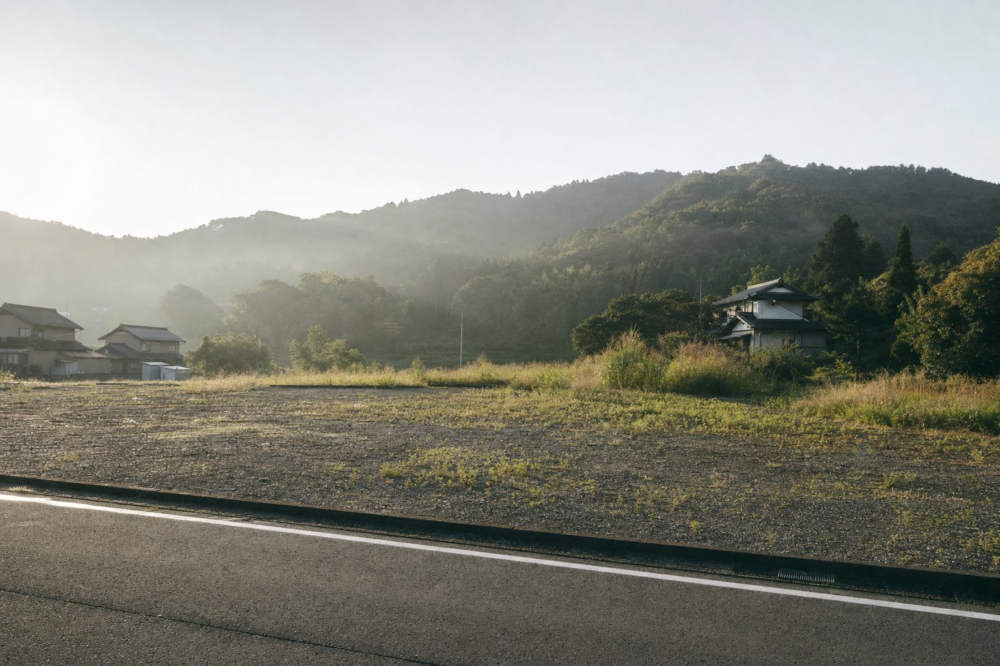
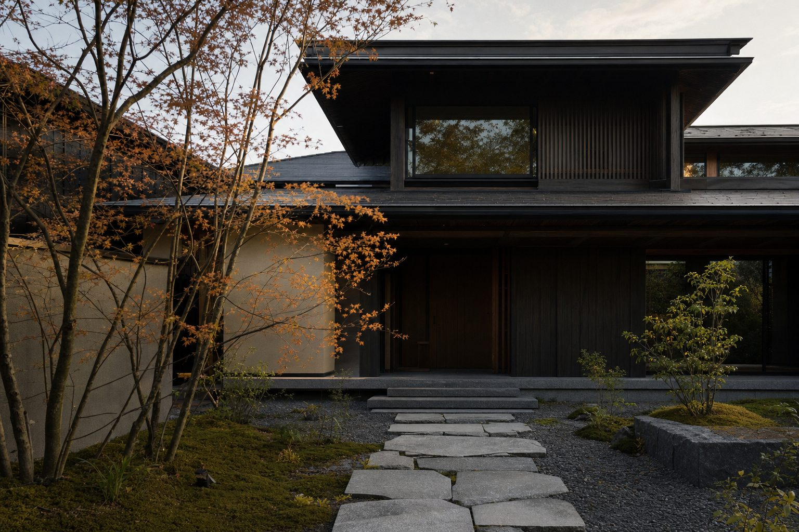
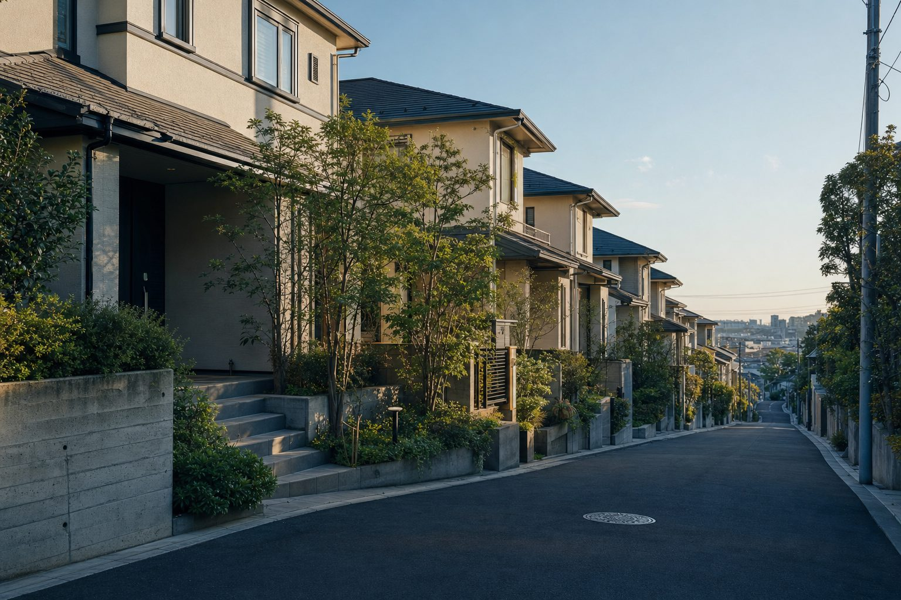
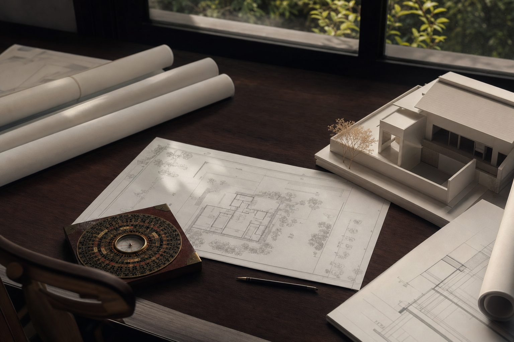
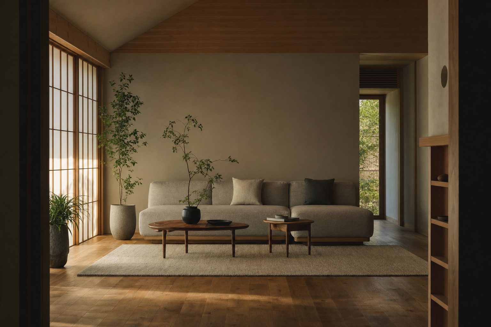
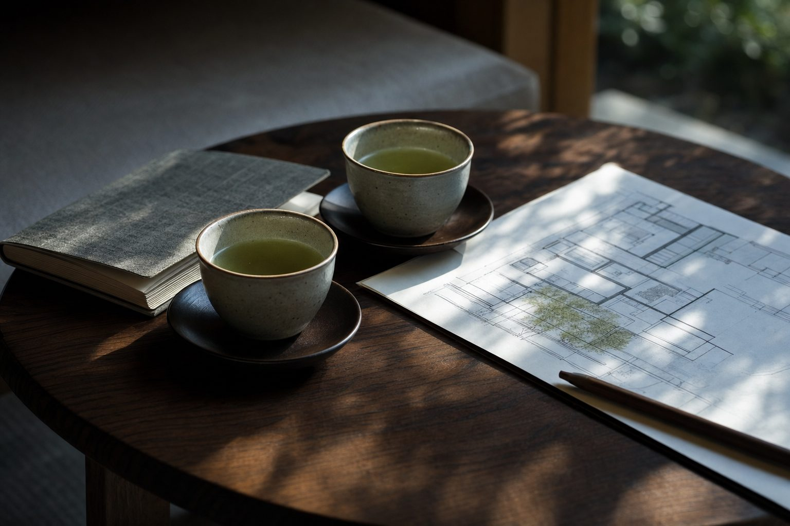
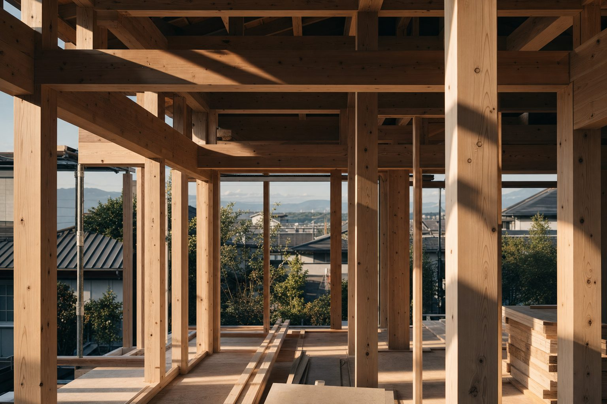
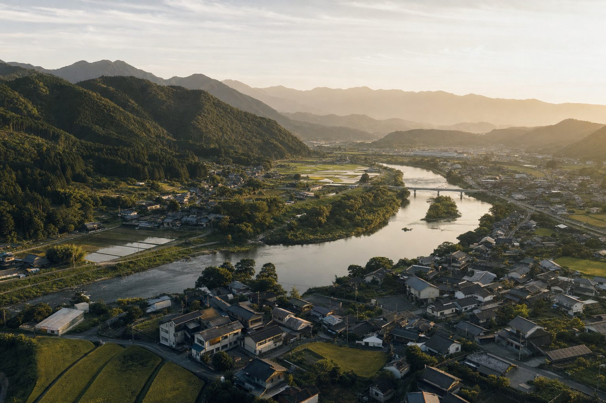

01
3,000件+
建築士の目線でつくる、
暮らしやすい風水
大手建築会社で23年。のべ3,000件以上の住宅・店舗を手がけた一級建築士が、使い勝手を崩さない風水を提案します。
住まいを選ぶ。整える。時と方位を選ぶ。暮らしの場面ごとに入り口があります。

LAND
土地（場所）風水判断｜建てる前に吉凶をみる
1万円／1案件（税別）

PROPERTY
建売・オフィス・店舗既存物件風水判断｜場所と物件の両面から
3万円／1案件（税別）

SEARCH
風水物件探し｜現地で吉運物件を見極める
15万円〜／1同行（税別・交通費別）

DESIGN
建築士の目線で新築・リフォーム風水｜プランの段階から
内容によりお見積り

HOME
現状物件の風水鑑定｜家・店舗・オフィスに
内容によりお見積り

CONSULT
風水コンサル｜「これってどうなの？」を1時間で
2万円／1時間（税別）
DIRECTION
奇門遁甲 吉方位判断｜旅行・試験・商談に
5,000円／1案件（税別）

TIMING
奇門遁甲 吉日時間判定｜地鎮祭・入居・開店に
1万円／1案件（税別）
01
3,000件+
大手建築会社で23年。のべ3,000件以上の住宅・店舗を手がけた一級建築士が、使い勝手を崩さない風水を提案します。
02
家の場所、部屋の方位、始める時期。3つを重ねて読み解きます。著名な風水師に20年師事して身につけた技法です。
03
住所・平面図・建築年など、メニューに応じた情報をもとに図面で鑑定します。現地で鑑定する場合もあり、そのほうが精度は高くなります。物件探しの同行も。
04
寝る場所、机の位置、スマホを充電する場所。大がかりな工事をしなくても、暮らしの配置から整えられます。

風水は、特別な人のための占いではありません。
毎日帰る家を、少しだけ整えること。寝る場所、机の向き、玄関の明るさ。
住まいが整えば、人生はもっと軽やかになる。今日から、風水のある暮らしを始めよう。
公式LINEに登録すると、今なら
有料級の開運風水
7つの特典をお届けします。